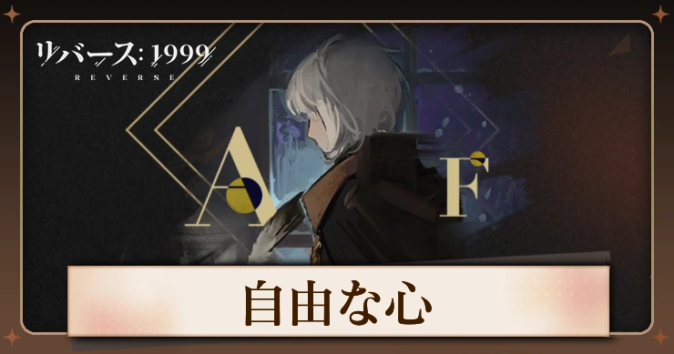

Phase of mind
星６
角度を正し、サッシュをしっかりと結び、しわを綺麗に整える。
そっと袖口を巻き上げて、下ろして、また巻き上げる。
彼女は鏡の中の自分と、あの優しかった夜を見つめた。
美しい新世界とその福祉のために、すべてを捧げる準備ができた。
1位はわたし!いつだってわたしのもの!小さな勝者が飛び跳ねて灰色の家に入る。
3位、3位、やっぱり3位。もう!もう!もう!
そのオレンジ色はチョークのマスを跳び越えて、灰色の家を飛び出した。
彼女はどこへ?小さな勝者がつぶやく。また彼女に会えるかな?
磨き、刻み。水、油、ハチミツと砂の山。
月明かりは古い枝にとまるセミの抜け殻と、新しい杖の容貌を細々に眺める。
木は匠の手の中で生まれ変わり、匠は明日の中で生まれ変わる。
しかし森にとって、身分に意味などない。
この夜がランプの色を冒涜する。美と善を冒涜する。
静かな眠りと長いため息を冒涜する。彼女の知っている全ての子守唄を冒涜する。
そして、次の日もその次の日も長い夜に、安らぎが戻ることは二度とない。
風と雨の音を越え、ますます高揚する彼女の声が心の中で響き渡る。
もっと遠く、もっと高く、絶対に止まらない絶対に。
観客と劇場を擁して、国王はなお、自身が無限に広がる宇宙の王だと信じている。
道、それは人の手によって作られるもの。
ワインとパン、それは労働によって得られるもの。
小さな新芽が若葉を広げ、山積みのポーションの中で眠気に抗う。
もう少し、あともう少し、次のページを読み終えるまでもう少し。
慎重、回避、遊走。安全を考慮して、前後を見回すことそれは不要。
記録、記録、記録。この時を記録し、この瞬間を記録すること。それが必要。
閃光、ブラックホール、万人が注目する星。
美しい国の最も美しい夢。
彼女の髪は金箔よりも高価で、彼女のキスマークは紙幣の束に匹敵する。
しかし、彼女の心、心、心は…
金貨一枚にも、銀貨一枚にも、それどころか一見の価値にもならない。
星５
どうしても眠れない夜。痛みに耐える明け方。
沈黙が続く長い午後。1冊1冊、静かにめくられてゆく本。
霧の中からすくい上げた町。そっと扱う、先を急ぐ人々を驚かさないように。
静かに歩いて路地に入り、時間通りに到着する。
責任は彼の足取りに追いつく。いつものように。
地上に落ち、削られ、磨かれ、つや消しを受けるアカシア。
片方には弓と矢。片方には流線とサーフボード。海は言う。
あなたの自由は木々の自由でもある、と。
グリッド間のタイピング。改行、最初のバイトは、41─もう一度改行、
2つ目のバイトは、41-静寂、平穏、安定。まるでゆりかごの中のように。
あなたの子は、あなたの子であったことがない。
優秀な保護者たちは孤独な午後を上手に過ごす。
赤い果実がぐっすりと眠る時、紳士は木の上から落ちてくるだろうか。
光は前方を照らし、白をより白く、明るいをより明るくする。
期待、好奇心、渇望。世界はそうやって成り立っている。
知っていることは、全貌とは限らない。
